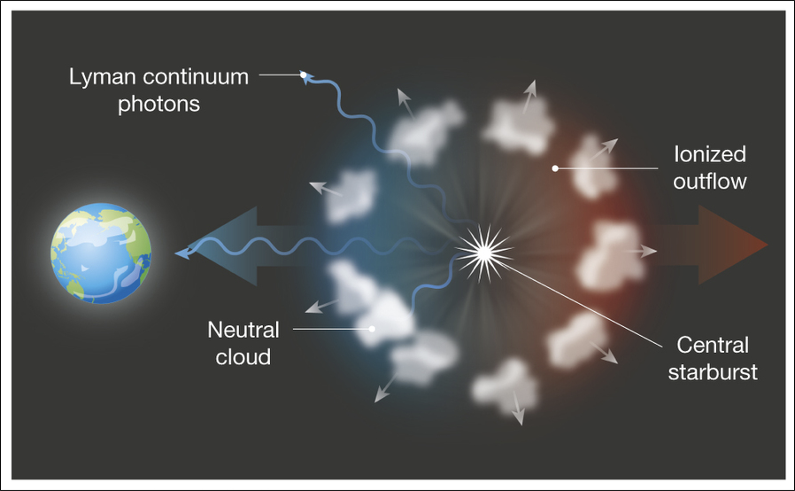

Dawn Erb
Leonard E Parker Center for Gravitation, Cosmology and Astrophysics
Kenwood IRC 4087
3135 N Maryland Avenue
Milwaukee, WI 53211
tel 414 229 3654
fax 414 229 5589
erbd@uwm.edu
In the broadest terms, the process of galaxy formation is well-understood: dark matter halos grow via gravity, attracting baryons which sink to the center of the potential wells and form stars. Once star formation has begun, however, the astrophysics of galaxy evolution is much more complicated. Stars generate complex feedback processes, including stellar winds, supernovae, and radiation pressure, which reheat gas in the galaxy and likely expel some fraction of it entirely, enriching the intergalactic medium (IGM) with heavy elements. For an overview of the importance of feedback processes in low mass galaxies, see my review article in Nature.

Model of an outflow in a low mass, highly ionized galaxy. From Erb 2015, Nature, 523, 169.
My research addresses these questions using optical and infrared observations of galaxies and their environments. We conduct spectroscopic studies of galaxies in the early universe, focusing primarily at redshifts z~2-3, when the universe was ~20% of its present age. Such observations can tell us about the masses, star formation rates, and chemical properties of these galaxies and their surrounding gas, and provide information on how they interact with their environment. We are particularly interested in young, low mass, unevolved galaxies; such galaxies contain a significant fraction of the star formation in the universe, and may shed light on the physical conditions in the first galaxies to form in the very early universe.
Dawn Erb
Leonard E Parker Center for Gravitation, Cosmology and Astrophysics
Kenwood IRC 4087
3135 N Maryland Avenue
Milwaukee, WI 53211
tel 414 229 3654
fax 414 229 5589
erbd@uwm.edu